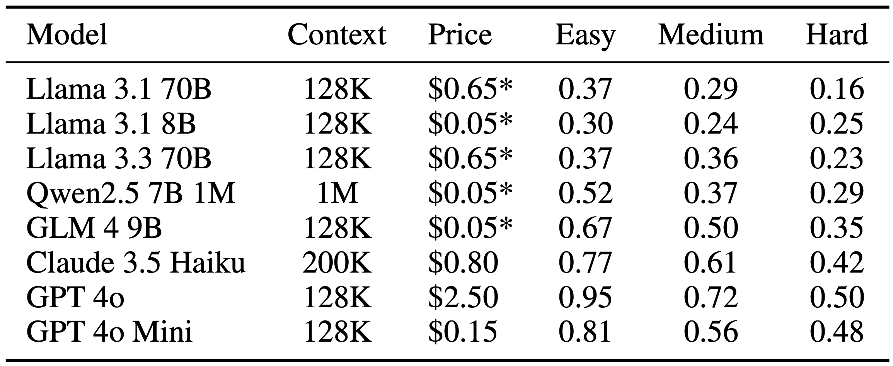

Evaluation

The table presents model performance across difficulty levels. All LLMs' performance downgrades when difficulty increases. On the easy level, SCALAR can already differentiate LLMs' long context capability, where the best model GPT-4o achieves 95% accuracy, while the lowest-performing models hover around 30-37%, compared to the random baseline of 25%. For the hard level set, half of the models achieve random performance, and even current SOTA models obtain less than half the correct results, demonstrating how challenging our dataset is.